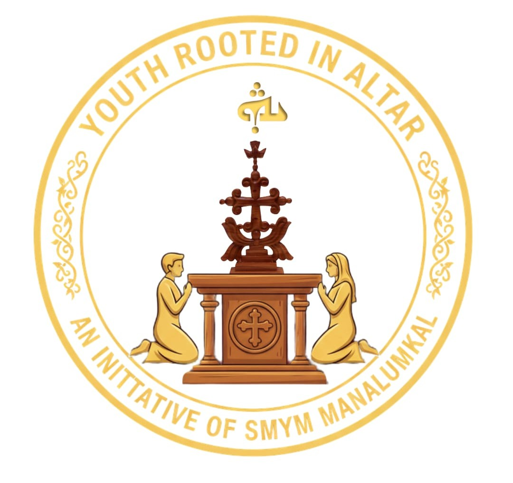
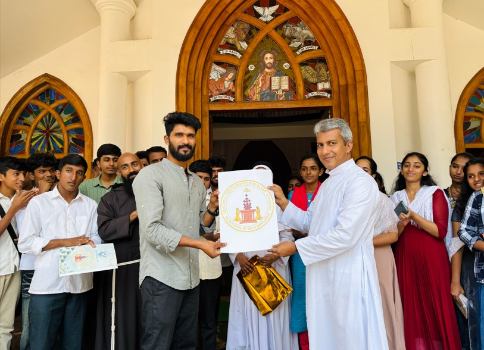
കർമ്മരേഖയും ലോഗോയും പ്രകാശനം ചെയ്തു
SMYM മണലുങ്കൽ യൂണിറ്റിൻ്റെ ഈ പ്രവർത്തന വർഷത്തെ കർമ്മരേഖയും ലോഗോയും പ്രകാശനം ചെയ്തു. വിശുദ്ധ കുർബാനയ്ക്ക് ശേഷം പള്ളിയിൽ വെച്ച് നടന്ന ചടങ്ങിൽ യൂണിറ്റ് ഡയറക്ടർ റെവ. ഫാ. തോമസ് ആയിലുക്കുന്നേൽ പ്രകാശനകർമ്മം നിർവഹിച്ചു.
പുതിയ കമ്മിറ്റി നിലവിൽ വന്ന ഈ ചുരുങ്ങിയ രണ്ടു മാസത്തിനുള്ളിൽ തന്നെ 28-ഓളം വ്യത്യസ്തമായ പ്രവർത്തനങ്ങൾ വിജയകരമായി പൂർത്തിയാക്കാൻ സാധിച്ചത് ഏറെ അഭിമാനകരമാണെന്ന് അദ്ദേഹം പറഞ്ഞു. വരും നാളുകളിൽ കൂടുതൽ ഊർജ്ജസ്വലമായ പ്രവർത്തനങ്ങളുമായി മുന്നോട്ട് പോകണമെന്നും, കർമ്മരേഖയിലെ പദ്ധതികൾ സമയബന്ധിതമായി പൂർത്തിയാക്കാൻ എല്ലാ യുവജനങ്ങളും ഒത്തൊരുമയോടെ പ്രവർത്തിക്കണമെന്നും അദ്ദേഹം ആശംസിച്ചു.
യൂണിറ്റ് ഭാരവാഹികളും എക്സിക്യൂട്ടീവ് കമ്മിറ്റി അംഗങ്ങളും ചടങ്ങിൽ സന്നിഹിതരായിരുന്നു. വരും വർഷം വൈവിധ്യമാർന്ന ഒട്ടേറെ കർമ്മപദ്ധതികളാണ് മണലുങ്കൽ യൂണിറ്റ് വിഭാവനം ചെയ്തിരിക്കുന്നത്.
(കുരിശിന്റെ വഴിയിൽ യുവത്വം)
Youth Rooted In Altar - SMYM MANALUMKAL UNIT
Empowering Young Voices
The Syro-Malabar Youth Movement (SMYM) is a dynamic and vibrant organization that empowers young people to live their faith with passion and purpose. At SMYM Manalumkal, our unit connects with both the national and international SMYM network, offering a platform for young people to deepen their faith, develop their leadership skills, and engage in meaningful service..
Our Activities
At SMYM Manalumkal, we organize various activities that nurture faith, leadership, fellowship, and service among young people.
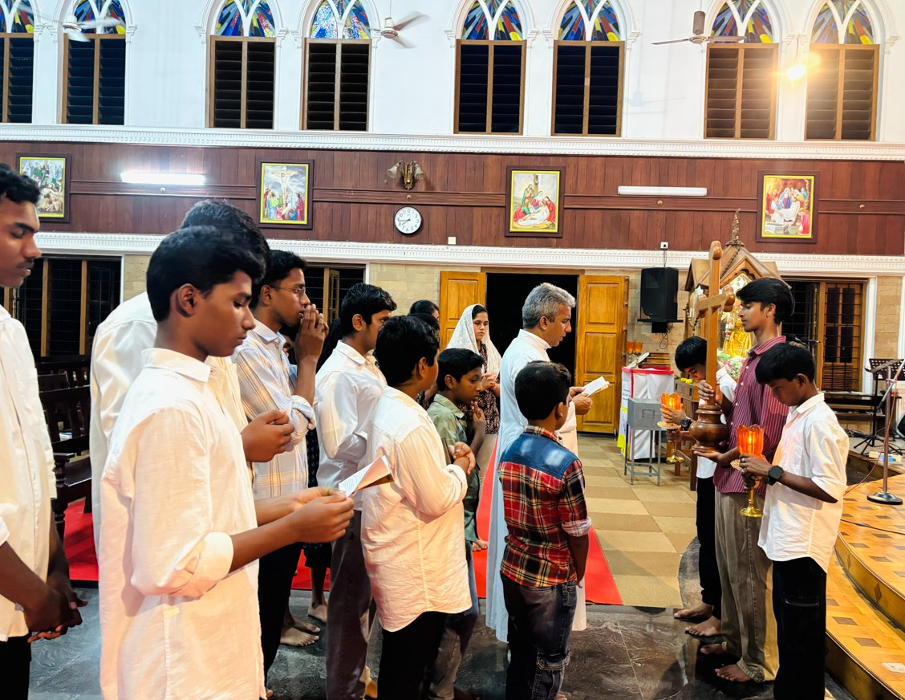
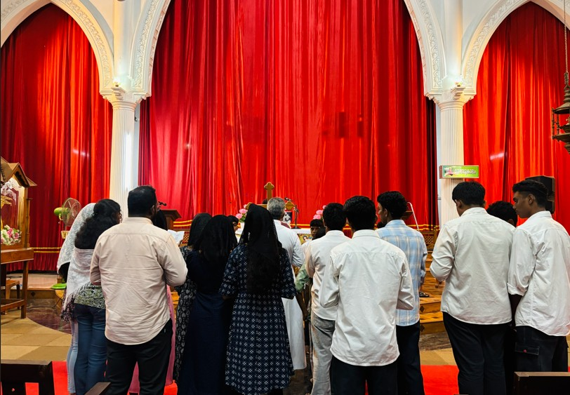
Media
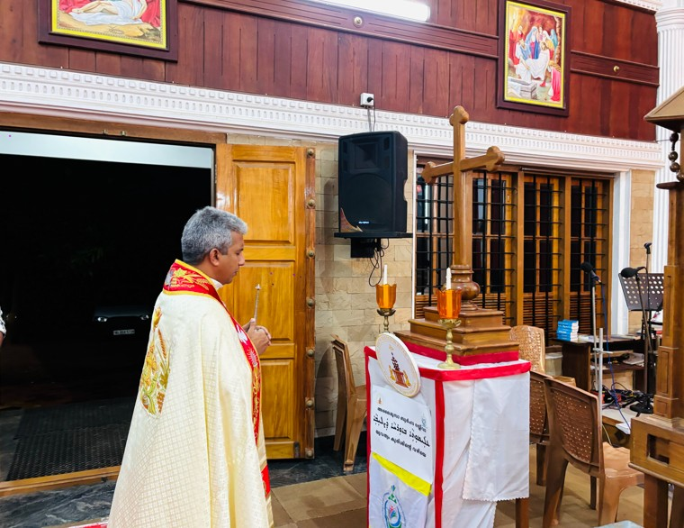


Executive Members 2026-27

Fr. Thomas Ayallukunnel
Director

Sr.Jasmin FCC
Joint Director
Jestin Jose
Lay Animator
Shibi Saju
Lady Animator
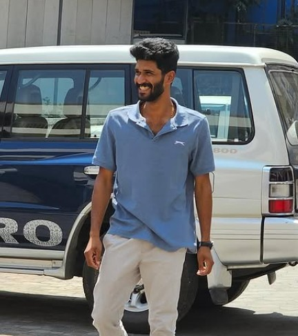
Nevin Varghese
President
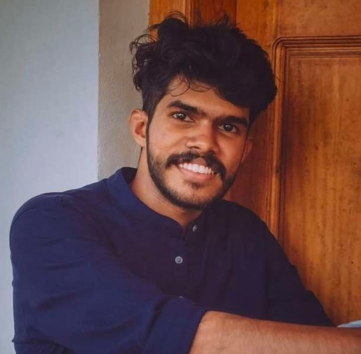
Roshan Thomas
General Secretary
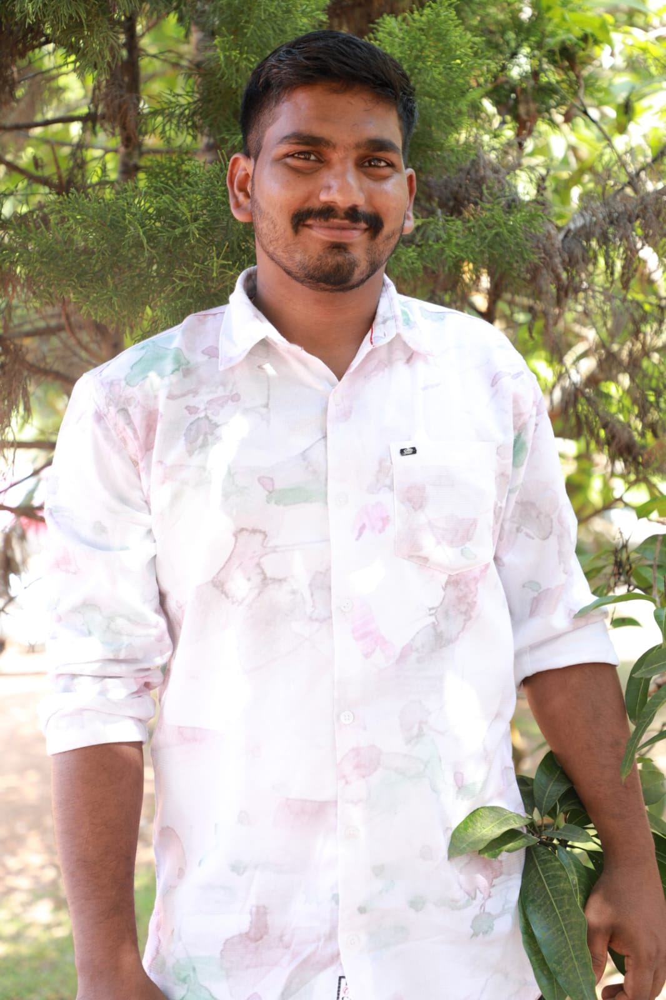
Geo Siby
Vice President
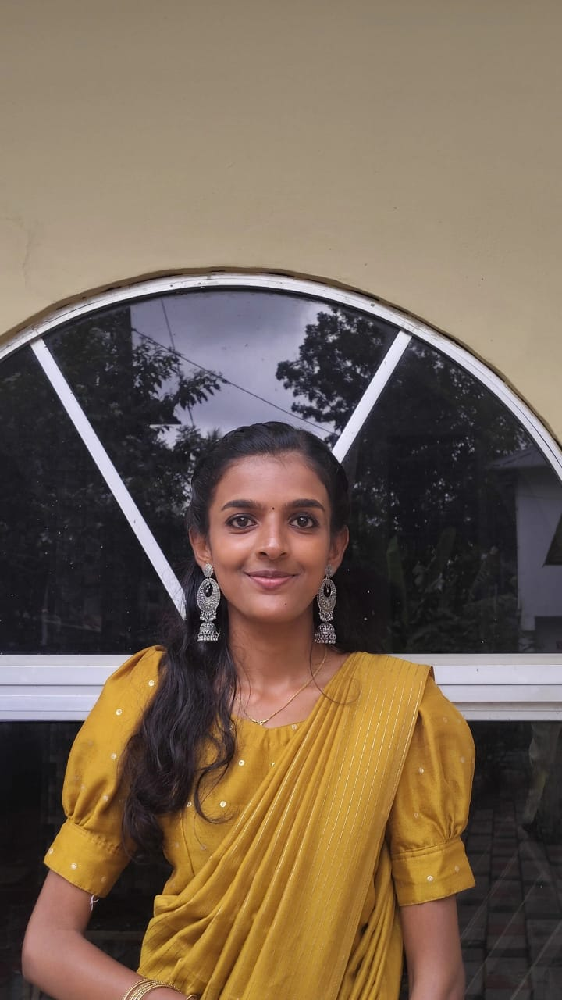
Femy Antony
Vice President

Treesa Maria Baby
Secretary
Jerin Jose
Treasurer
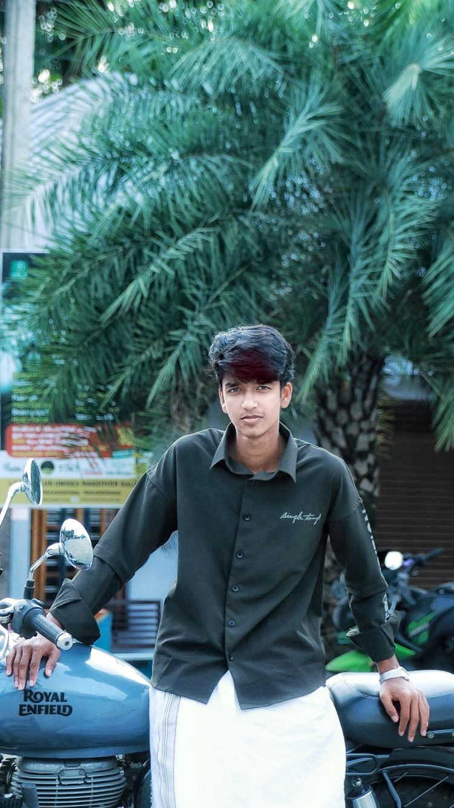
Adorn Benny
Forane Councillor
Anju Joby
Forane Councillor
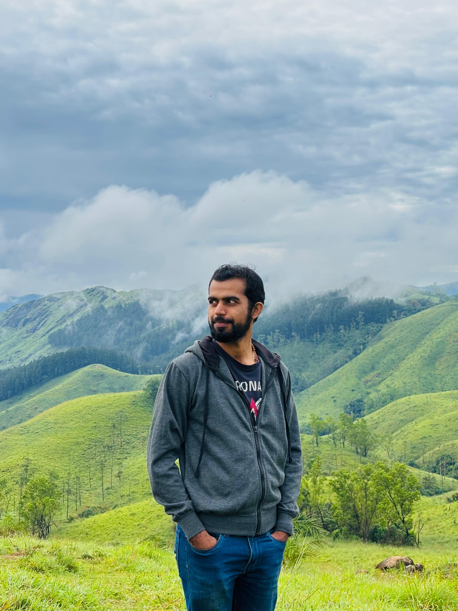
Kevin Tom
Committee Member
Adv. Jibin Joji
Organizer